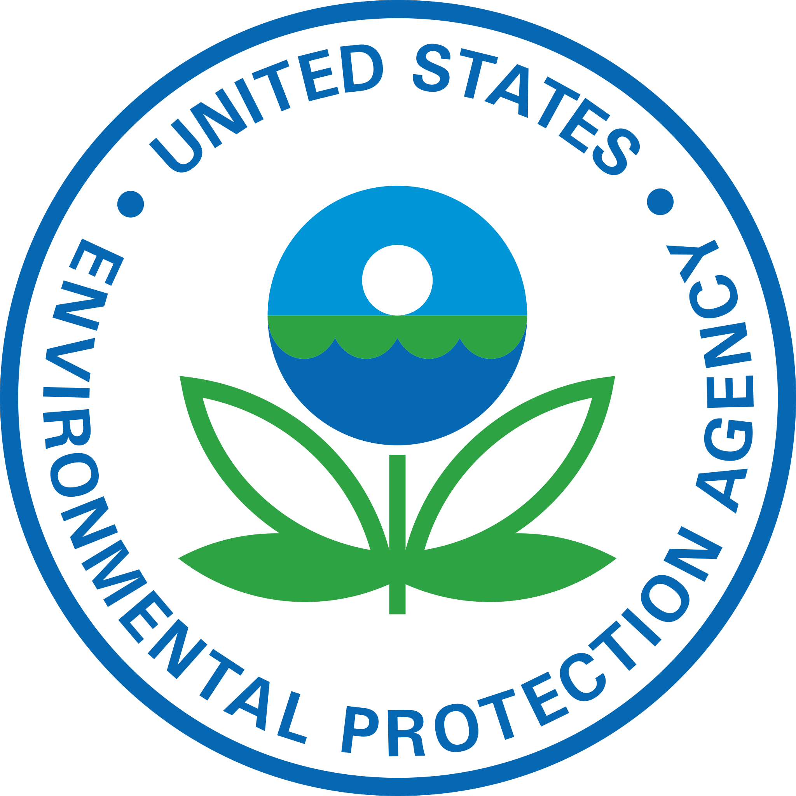
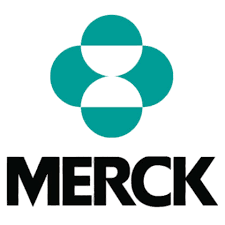

Environmental Protection Agency (EPA)
Durham, NC | Toxicity Data Scientist | Nov 2024 – May 2025
- Processed, cleaned, and analyzed large datasets in Python, R, and SQL to ensure data integrity
- Developed and maintained automated data pipelines to integrate new assay data into existing datasets
- Resolved GitHub issues related to data processing, bug fixes, and workflow automation
- Created interactive data visualizations using pandas, matplotlib, and seaborn
- Analyzed cytotoxicity burst assay specifications for over 4,500 unique chemicals
UC Berkeley
Berkeley, CA | Lecturer | May 2025 – Current
- Led programming-focused labs and lectures for over 60 graduate students
- Mentored students in debugging, code optimization, and numerical algorithms
- Developed instructional materials including slides, assignments, and examples

Merck
Berkeley, CA | Graduate Capstone Project | Jan 2024 – Jun 2024
- Fine-tuned an LLM for scientific article analysis with PyTorch (Gemma model)
- Automated data scraping, cleaned datasets, and calculated model performance metrics
- Queried and managed structured datasets using SQLite
Research Experience
Chavkin Lab – UW Pharmacology
Seattle, WA | Research Intern | Jun 2021 – Jan 2023
- Researched in vitro intracellular signaling for various peripherally restricted drugs
- Plated/transfected cells, imaged cells under fluorescent microscope, analyzed data in Excel
- Presented at the 2022 UW Undergraduate Research Symposium
NIDA Summer Internship – Harvard Medical School
Belmont, MA | Research Intern | Jun 2022 – Aug 2022
- Researched genetic risk factors for cocaine addiction using chemical and genetic data
- Conducted luciferase/protein assays, plasmid isolation, DNA purification, and PCR
- Presented at the 2022 NIDA Summer Research Internship Project Showcase